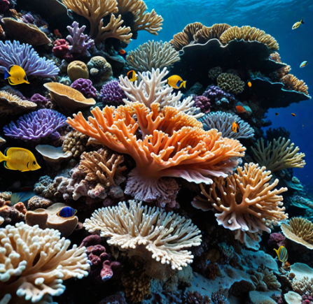

Elisa Bark: Hey guys do you guys know the difference between recycling and waste?
Sophia_GreenLiving: Hey, everyone! What’s one eco-friendly habit you’ve recently started, and how has it helped?
EcoWarrior_77: I’ve cut down on single-use plastics by using silicone zip bags and reusable produce bags. It's made grocery shopping a lot more sustainable. What other ways can I reduce plastic in daily life?
NatureNerd_Kai: That's awesome! I've been wondering: how effective are biodegradable trash bags? Are they really better for the environment?
GreenTomato_Marc: Good question! I’ve heard mixed opinions on those. Can anyone share experience with composting at home? Does it really cut down on waste significantly?
Zara_PlantPowered: Totally! Composting has been great for reducing food waste for me. I'm curious though, are there any creative ways to reuse food scraps instead of tossing them?
Liam_SolarLife: I've started growing my own herbs using leftover vegetable scraps like scallion roots. Speaking of sustainability, do solar panels make sense for small apartments? What other ways can apartment dwellers save energy?

EcoMindset_Leo: Great point! I'd like to know: are there eco-friendly cleaning products that actually work well for deep cleaning? I'm still using bleach occasionally and want to stop.

NatureMama_Amy: Same here, Leo! I’ve been switching to vinegar and baking soda for most things. Are there any eco-friendly alternatives for laundry detergent that are both effective and affordable?
PlanetProtector_Jane: That’s a good one! On the topic of laundry, does anyone know if cold water washing makes a noticeable difference in reducing energy use?
OceanSaver_Aiden: Definitely curious about that too, Jane. I’ve been washing in cold water but not sure how much energy it’s actually saving. What are other underrated ways to save water at home?